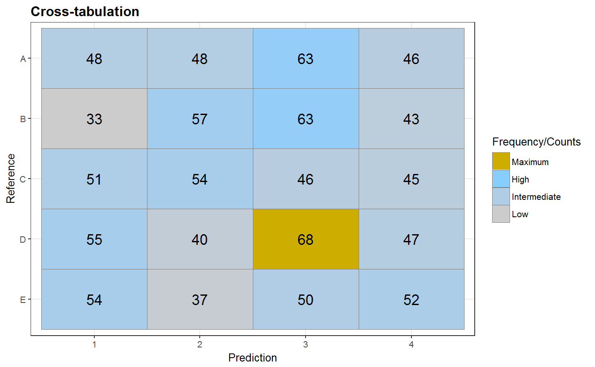
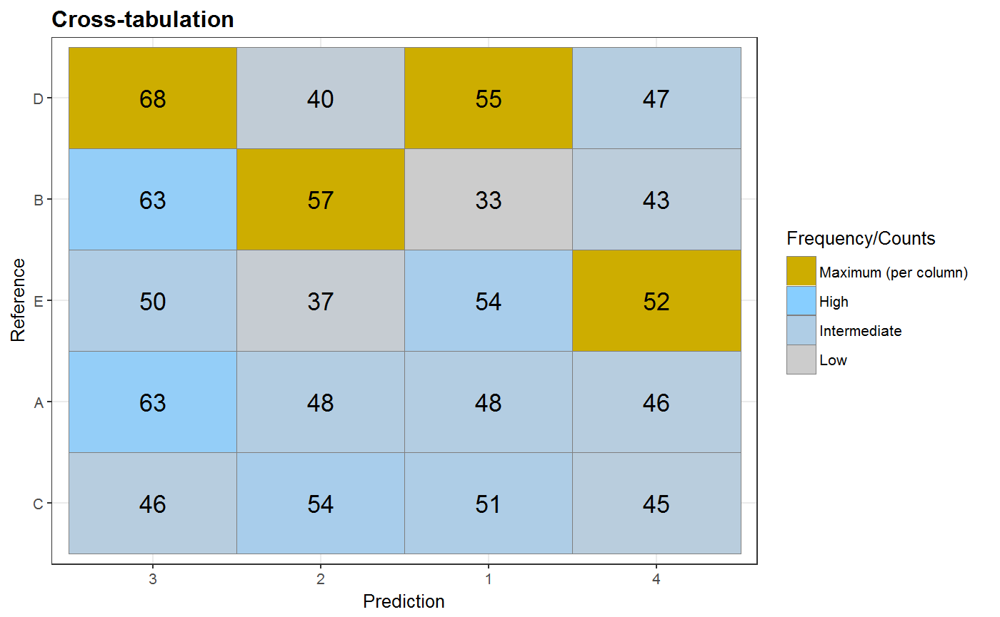
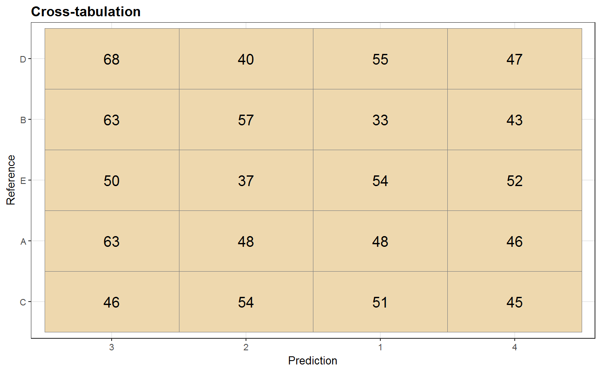
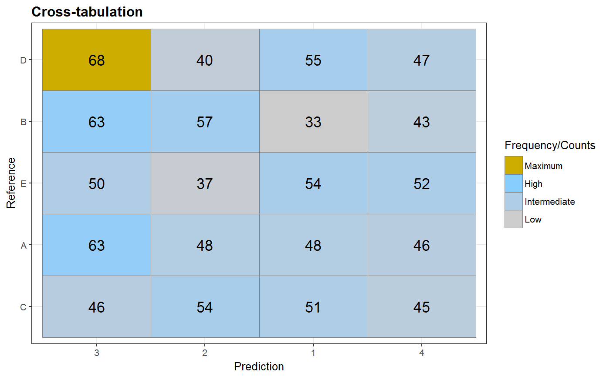
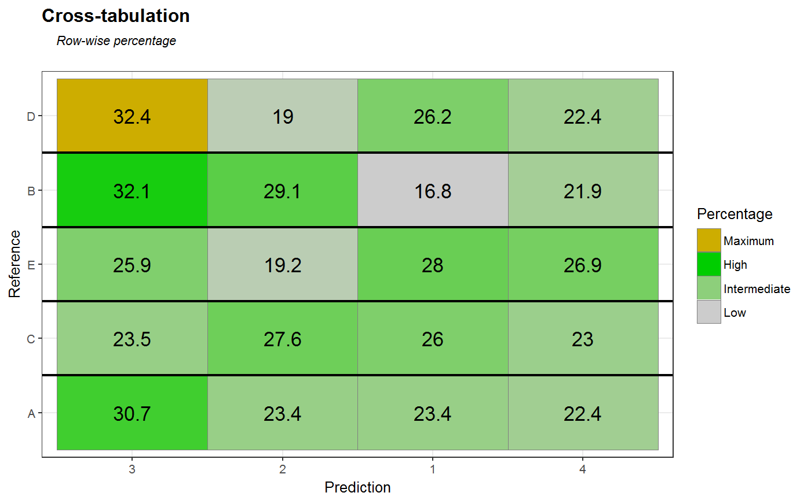
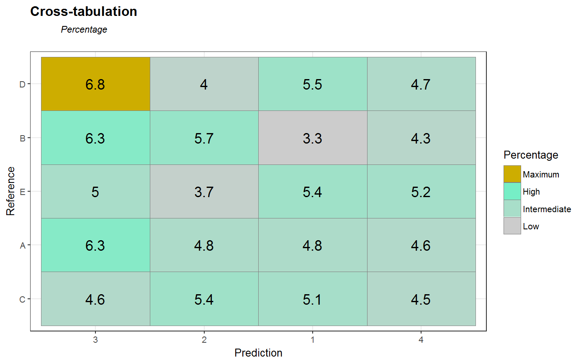

[!.] Plot a cross-tabulation (classification table)
Plot a crosstabulation (classification table)
qplot_crosstab(obj, ...) # S3 method for table qplot_crosstab(tabl, Title = "Cross-tabulation", xLabel = NULL, yLabel = NULL, subTitle = NULL, text.size = 5, sort = FALSE, bg.color = "skyblue1", max.color = "gold3", low.color = "grey80", decimals = 1, show.max = c("max", "colMax", "rowMax", FALSE), shades = TRUE, guide = c("legend", "colorbar", FALSE), zero.color = "grey60", text.color = "black", as.percentage = c(FALSE, TRUE, "row", "col"), ...) # S3 method for numeric qplot_crosstab(varX, varY, Title = "Cross-tabulation", xLabel = match.call()$varX, yLabel = match.call()$varY, ...) # S3 method for hyperSpec qplot_crosstab(obj, varX, varY, Title = "Cross-tabulation", xLabel = NULL, yLabel = NULL, ...) # S3 method for data.frame qplot_crosstab(obj, varX, varY, Title = "Cross-tabulation", xLabel = match.call()$varX, yLabel = match.call()$varY, ...) # S3 method for matrix qplot_crosstab(obj, Title = NULL, ...) qplot_crosstab_sort(..., sort = "maxOnDiag", show.max = TRUE, shades = TRUE) qplot_crosstab0(tabl, ..., sort = FALSE, bg.color = "wheat2", decimals = 2, show.max = FALSE, shades = FALSE, guide = FALSE) qplot_crosstab0s(tabl, ..., Title = "Cross-tabulation", xLabel = NULL, yLabel = NULL, subTitle = NULL, text.size = 5, sort = "maxOnDiag", bg.color = "wheat2", decimals = 2, show.max = FALSE, shades = FALSE, guide = FALSE)
Arguments
| ... | (The same parameters as above). |
|---|---|
| tabl | A classification table, crosstabulation: either an object of a class "table" or a square matrix. |
| Title | The main title for the plot. |
| xLabel | A label for abscisa (x) axis. |
| yLabel | A label for ordinate (y) axis. |
| subTitle | The second line of title, which will be smaller and and in italics. |
| text.size | The size of text inside cells. |
| sort | Default is |
| bg.color | (THIS PARAMETER DO NOT WORK if |
| max.color | A background for maximum values. |
| low.color | A background for low values. |
| decimals | The number of decimal positions in rounding. Default is 2 (i.e., precission is 0.01). |
| show.max | The rule to highlighted top values. Possible entries:
|
| shades | Logical. If |
| guide | A type of guide to display: either |
| zero.color | Color of text inside cells, that have value equal to zero. |
| as.percentage | Show result as percentage:
|
| Color | of text inside cells, that have value not equal to zero. |
Value
A ggplot object.
More details in package ggplot2.
See also
To plot classification table (confusion matrix) use
qplot_confusion.
Other spHelper plots: check_palette,
layer_spRangeMean,
plot_colors, plot_hyPalette,
plot_spCompare, plot_spDiff,
plot_spDistribution,
qplot_confusion,
qplot_infoDim, qplot_kAmp,
qplot_kSp, qplot_prediction,
qplot_spRangeCenter,
qplot_spStat, qplot_spc,
rmExpr, rm_stripes,
stat_chull
Examples
# BUG for this data: when 'sort = TRUE', # IPPN LSIL HSIL # H.Cluster 1 0 0 111 # H.Cluster 2 0 0 45 # H.Cluster 3 0 0 49 # H.Cluster 4 0 0 5 library(spHelper) # Generate data: Random guess ============================ N <- 1000 # number of observations Prediction <- sample(1:4, N, replace = TRUE) Reference <- sample(c("A", "B","C","D","E"),N, replace = TRUE) tabl <- table(Prediction,Reference) qplot_crosstab(tabl)qplot_crosstab_sort(tabl) # different order of columns and rowsqplot_crosstab0(tabl) # no colorsqplot_crosstab0s(tabl) # no colors, different order of columns and rowsqplot_crosstab(Prediction, Reference, as.percentage = FALSE, sort = TRUE)qplot_crosstab(Prediction, Reference, as.percentage = "row", sort = TRUE)qplot_crosstab(Prediction, Reference, as.percentage = "col", sort = TRUE)qplot_crosstab(Prediction, Reference, as.percentage = TRUE, sort = TRUE)